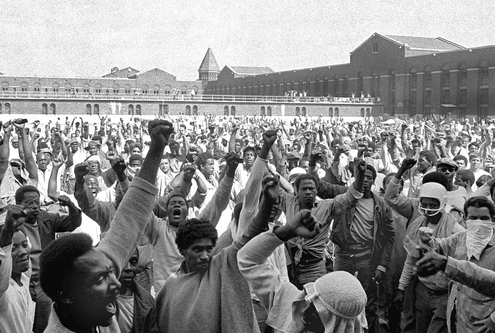

Religion Inside the Walls: Faith & Resistance
At Attica Correctional Facility in 1971, religion was far more than a source of personal comfort. It was also a space where prisoners organized, challenged authority, and asserted their humanity. Religious communities provided networks of solidarity and political education, and conflicts over religious practice became one of the many tensions between prisoners and the prison administration in the months leading up to the Attica Prison Uprising.
Islam and the Politics of Recognition
By 1971, Muslim prisoners had become one of the most organized groups inside Attica. Many were influenced by the Nation of Islam, which had grown rapidly within American prisons during the 1960s.13 Muslim prisoners pushed for recognition of basic religious rights, including access to Muslim ministers, the ability to pray together, and accommodations in the prison diet.14
These concerns appeared in the prisoners’ manifesto, which demanded that inmates be allowed a pork-free diet, since pork dominated the prison menu and conflicted with Islamic dietary laws.14 Religious freedom was therefore intertwined with broader demands for dignity and fair treatment.
Prison officials often viewed Muslim organizing with suspicion, seeing it as a potential security threat rather than as a legitimate exercise of religious liberty.13 For many Black prisoners, however, the teachings of the Nation of Islam offered a powerful message of discipline, self-respect, and racial pride. Practicing Islam inside prison was therefore both a spiritual commitment and an assertion of personal dignity within an institution that routinely denied it.
In the months before the uprising, Attica also became a site of growing political discussion. Prisoners influenced by groups such as the Black Panther Party and the Young Lords held meetings and discussions that concerned prison authorities.15 While these groups differed in ideology and tactics, together they helped create a climate of political awareness and collective organizing among the prison population.
Religion as Resistance
For many prisoners at Attica, religious practice itself became a form of resistance. Collective prayer, scriptural study, and observance of religious dietary rules allowed prisoners to assert control over parts of their lives within an institution designed to regulate nearly every aspect of daily existence.
This dynamic can be understood through the framework of liberation theology. As Salzman and Lawler describe it, liberation theology emphasizes faith lived out through action—an engagement with injustice that expresses solidarity with the poor and marginalized.16 Religious life at Attica often reflected this kind of engaged faith. Spiritual belief was not isolated from prisoners’ material conditions but closely connected to their struggle for dignity and justice.
Central to this theological perspective is the belief that human dignity is inherent and cannot be taken away. Salzman and Lawler describe distributive justice as requiring that social institutions meet basic human needs and consider the well-being of the most vulnerable members of society.16 From this perspective, conditions at Attica — including overcrowding, inadequate food, racial discrimination, and restrictions on religious practice — represented not only administrative failures but violations of fundamental human dignity.
When prisoners declared during the uprising that “we are men,” they were asserting precisely this claim. The statement was both political and moral: an insistence that imprisonment did not erase their humanity.
Accounts from the uprising also describe prisoners taking vestments from the prison chapel and wearing them during the occupation.17 This act symbolically inverted the traditional relationship between religious authority and institutional power, reclaiming religious symbols in support of prisoners’ own claims to dignity.
The Deeper Questions: State Violence and Reform
For many observers, the events at Attica reinforced prisoners’ claims that the prison system functioned less as a rehabilitative institution than as a mechanism of control. Liberation theology interprets such systemic injustice as structural sin—wrongdoing embedded in social institutions rather than in individual actions alone.16 As Salzman and Lawler explain, praxis within liberation theology seeks to transform these unjust structures and restore human dignity.
The prisoners’ demands at Attica were therefore not abstract ideological claims. They were requests for basic conditions necessary for human dignity: adequate food, fair treatment, religious freedom, and protection from violence.
In the years following the uprising, prison systems across the United States gradually expanded religious programming and recognized Muslim prisoners’ rights to practice their faith. Yet the questions raised at Attica remain unresolved. Liberation theology calls not merely for charity but for justice—for transforming the social structures that produce suffering in the first place.16 Whether prisons, as institutions built on confinement and control, can fully meet that challenge continues to be debated.